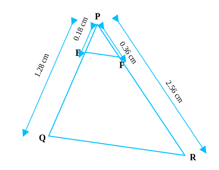
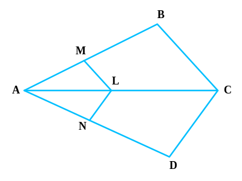

1. In Fig., DE || BC. Find EC in (i) and AD in (ii).
(i)
AD = 1.5 cm, DB = 3 cm, AE = 1 cm.
DE || BC.
Length of EC.
Since DE || BC, by Basic Proportionality Theorem (BPT):
ADDB = AEEC
Substituting values:
1.53 = 1EC
12 = 1EC
EC = 2 cm.
EC = 2 cm.
(ii)
DB = 7.2 cm, AE = 1.8 cm, EC = 5.4 cm.
DE || BC.
Length of AD.
By BPT: ADDB = AEEC
AD7.2 = 1.85.4
AD7.2 = 13
AD = 7.23 = 2.4 cm.
AD = 2.4 cm.
2. E and F are points on sides PQ and PR respectively of a ∆ PQR. For each of the
following cases, state whether EF || QR.
(i) PE = 3.9 cm, EQ = 3 cm, PF = 3.6 cm and FR = 2.4 cm.

PE = 3.9 cm, EQ = 3 cm, PF = 3.6 cm, FR = 2.4 cm.
If EF || QR.
Ratio 1: PEEQ = 3.93 = 1.3
Ratio 2: PFFR = 3.62.4 = 1.5
Since 1.3 ≠ 1.5, the sides are not divided in the same ratio.
No, EF is not parallel to QR.
(ii) PE = 4 cm, QE = 4.5 cm, PF = 8 cm and RF = 9 cm.

PE = 4 cm, QE = 4.5 cm, PF = 8 cm, RF = 9 cm.
If EF || QR.
Ratio 1: PEQE = 44.5 = 4045 = 89
Ratio 2: PFRF = 89
Since ratios are equal PEQE = PFRF.
By Converse of Basic Proportionality Theorem (Converse of BPT):
Yes, EF || QR.
(iii) PQ = 1.28 cm, PR = 2.56 cm, PE = 0.18 cm and PF = 0.36 cm.

EQ = PQ - PE = 1.28 - 0.18 = 1.10 cm.
FR = PR - PF = 2.56 - 0.36 = 2.20 cm.
Ratio 1: PEEQ = 0.181.10 = 955
Ratio 2: PFFR = 0.362.20 = 955
Ratios are equal. By Converse of BPT:
Yes, EF || QR.

3. In Fig., if LM || CB and LN || CD, prove that AMAB = ANAD.
LM || CB and LN || CD.
AMAB = ANAD
In ∆ ABC, LM || CB. By BPT (Corollary):
AMAB = ALAC ...(1)
In ∆ ADC, LN || CD. By BPT (Corollary):
ANAD = ALAC ...(2)
From (1) and (2), comparing RHS:
AMAB = ANAD
Hence Proved.

4. In Fig., DE || AC and DF || AE. Prove that BFFE = BEEC.
In ∆ ABC, DE || AC and DF || AE.
BFFE = BEEC
In ∆ ABC, DE || AC. By BPT:
BDDA = BEEC ...(1)
In ∆ ABE, DF || AE. By BPT:
BDDA = BFFE ...(2)
From (1) and (2), comparing LHS:
BFFE = BEEC
Hence Proved.
5. In Fig., DE || OQ and DF || OR. Show that EF || QR.
DE || OQ and DF || OR.
EF || QR.
In ∆ PQO, DE || OQ. By BPT:
PEEQ = PDDO ...(1)
In ∆ POR, DF || OR. By BPT:
PFFR = PDDO ...(2)
From (1) and (2):
PEEQ = PFFR
In ∆ PQR, since the sides PQ and PR are divided in the same ratio:
By Converse of BPT:
EF || QR.

6. In Fig., A, B and C are points on OP, OQ and OR respectively such that AB || PQ and AC
|| PR. Show that BC || QR.
Points A, B, C on OP, OQ, OR. AB || PQ and AC || PR.
BC || QR.
In ∆ OPQ, AB || PQ. By BPT:
OAAP = OBBQ ...(1)
In ∆ OPR, AC || PR. By BPT:
OAAP = OCCR ...(2)
From (1) and (2):
OBBQ = OCCR
In ∆ OQR, points B and C divide sides OQ and OR in the same ratio.
By Converse of BPT:
BC || QR.

7. Using Theorem 6.1 (BPT), prove that a line drawn through the mid-point of one side of a
triangle parallel to another side bisects the third side.
∆ ABC, D is midpoint of AB (AD = DB). Line DE || BC intersecting AC at E.
E is midpoint of AC (AE = EC).
By BPT, since DE || BC:
ADDB = AEEC
Since AD = DB, ADDB = 1.
Therefore, 1 = AEEC
AE = EC.
Hence, E bisects AC.
8. Using Theorem 6.2 (Converse BPT), prove that the line joining the mid-points of any two
sides of a triangle is parallel to the third side.
∆ ABC, D is midpoint of AB (AD = DB), E is midpoint of AC (AE = EC).
DE || BC.
Ratio 1: ADDB = 1 (Since AD=DB)
Ratio 2: AEEC = 1 (Since AE=EC)
Since ADDB = AEEC, by Converse of BPT:
DE || BC.

9. ABCD is a trapezium in which AB || DC and its diagonals intersect each other at the
point O. Show that AOBO = CODO.
Trapezium ABCD with AB || DC. Diagonals AC and BD intersect at O.
AOBO = CODO
Draw a line EO || DC passing through O and meeting AD at E.
In ∆ ADC, EO || DC. By BPT:
AEED = AOCO ...(1)
Since AB || DC and EO || DC, then EO || AB.
In ∆ ADB, EO || AB. By BPT:
EDAE = DOBO
Taking reciprocal: AEED = BODO ...(2)
From (1) and (2):
AOCO = BODO
Rearranging terms:
AOBO = CODO
Hence Proved.
10. The diagonals of a quadrilateral ABCD intersect each other at the point O such that
AOBO = CODO. Show that
ABCD is a trapezium.
Quadrilateral ABCD, diagonals intersect at O, AOBO = CODO.
ABCD is a trapezium (i.e., AB || DC).
Draw line EO || AB meeting AD at E.
In ∆ DAB, EO || AB. By BPT:
AEED = BODO ...(1)
Given: AOBO = CODO
Rearranging: AOCO = BODO ...(2)
From (1) and (2):
AEED = AOCO
In ∆ ADC, points E and O divide sides AD and AC in the same ratio.
By Converse of BPT, EO || DC.
But by construction, EO || AB.
Since EO is parallel to both AB and DC, therefore AB || DC.
Since one pair of opposite sides is parallel, ABCD is a trapezium.
Hence Proved.